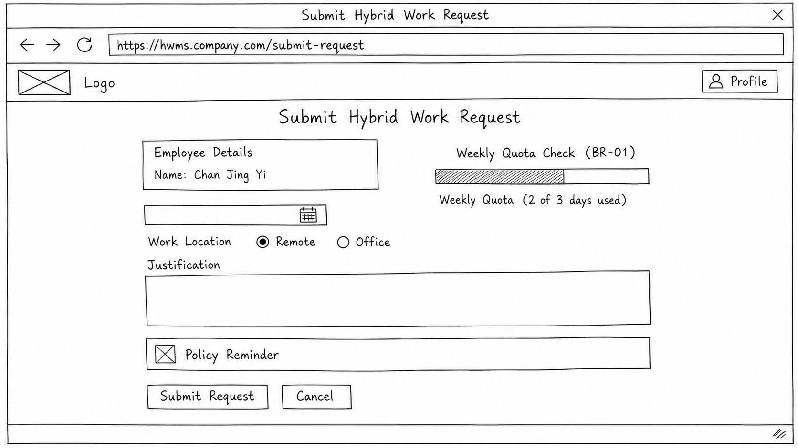
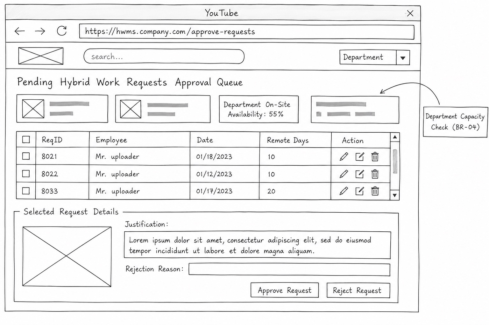
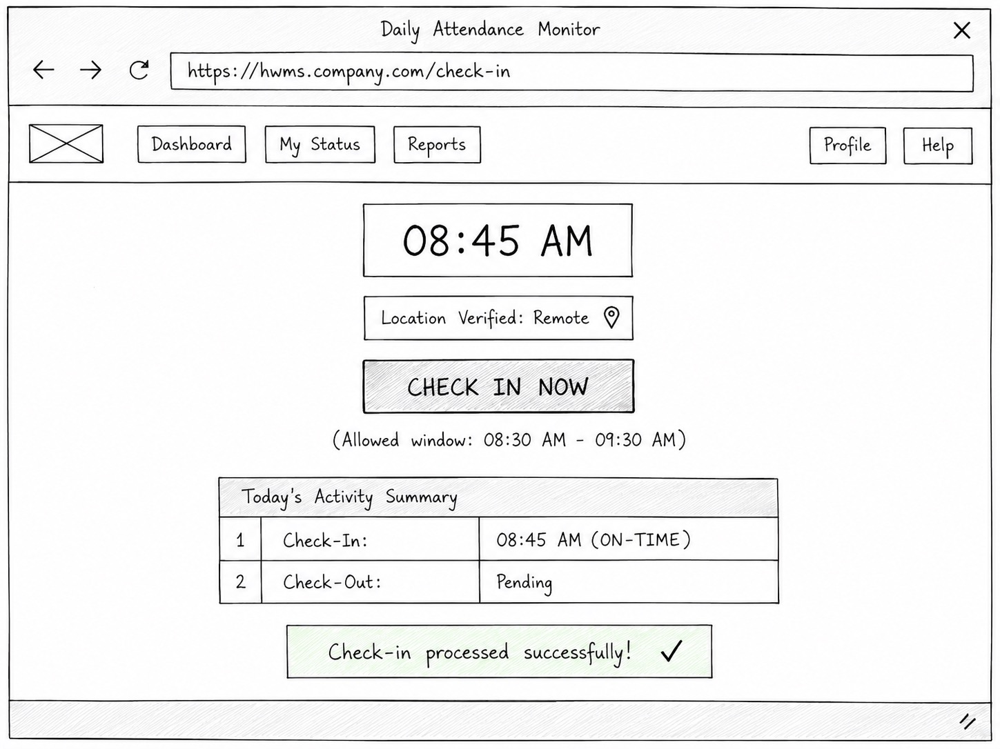

Student Name: Chan Jing Yi
Student ID: SUOL2500321
Course: Bachelor of Computer Science (ODL)
Institution: SEGi University — Faculty of Engineering, Built Environment, and Information Technology (FOEBEIT)
Submission Date: August 2026
This final project delivers a comprehensive system design specification for the Hybrid Work Monitoring System (HWMS), building directly upon the analytical foundation established in Assignments 1, 2, and 3. The objective is to translate user requirements, process models (DFDs), and logic/data models (ERDs and Decision Tables) into production-ready design artefacts. The document is structured into four core analytical sections: User Interface (UI) Design featuring low-fidelity wireframes, Unified Modeling Language (UML) structural and behavioral diagrams, rigorous Test Case Design covering valid and boundary exception paths, and a cross-artefact Traceability Matrix coupled with a reflective engineering evaluation.
User interface design forms the primary interaction touchpoint between organizational stakeholders and system functionality. In accordance with the system requirements defined in Assignment 1, three key functional screens have been designed as low-fidelity wireframes: Submit Hybrid Work Request, Approve Hybrid Work Request, and Employee Check-in/Check-out.

+-----------------------------------------------------------------------------------+
| HWMS Portal | Home | My Requests | Check-In | Tasks | Reports | [User: J. Chan] |
+-----------------------------------------------------------------------------------+
| |
| HOME > MY REQUESTS > SUBMIT NEW HYBRID WORK REQUEST |
| |
| +-----------------------------------------------------------------------------+ |
| | SUBMIT HYBRID WORK REQUEST | |
| +-----------------------------------------------------------------------------+ |
| | | |
| | Employee Name: [ Chan Jing Yi (ID: SUOL2500321) ] | |
| | Department: [ Software Engineering (On-Site Min: 50%) ] | |
| | | |
| | Requested Date: [ 2026-08-15 ] (Calendar Picker) | |
| | | |
| | Work Location: (o) Remote / Home ( ) Satellite Office | |
| | | |
| | Current Week Quota Status: | |
| | [|||||||||||||||||||||| ] 2 of 3 Remote Days Used | |
| | | |
| | Reason / Justification: | |
| | +-----------------------------------------------------------------------+ | |
| | | Sprint delivery phase. Working on core API refactoring. | | |
| | +-----------------------------------------------------------------------+ | |
| | | |
| | +-----------------------------------------------------------------------+ | |
| | | ALERT: Request must be submitted at least 2 days prior to date. | | |
| | +-----------------------------------------------------------------------+ | |
| | | |
| | [ Cancel Request ] [ SUBMIT FOR APPROVAL ] | |
| | | |
| +-----------------------------------------------------------------------------+ |
| |
+-----------------------------------------------------------------------------------+
The Submit Hybrid Work Request screen serves as the initial entry portal for employees seeking authorization to work remotely. Its architectural purpose is to capture employee requests while enforcing business rules at the user interface boundary prior to backend processing.
Home > My Requests > Submit New) establish context and support user orientation.[ SUBMIT FOR APPROVAL ] button styled with high visual weight, complemented by a secondary [ Cancel Request ] button to safely abort the transaction.
+-----------------------------------------------------------------------------------+
| HWMS Portal | Dashboard | Team Requests | Attendance | Tasks | [User: Manager A.] |
+-----------------------------------------------------------------------------------+
| |
| DASHBOARD > TEAM REQUESTS > PENDING APPROVALS |
| |
| +-----------------------------------------------------------------------------+ |
| | PENDING HYBRID WORK REQUESTS APPROVAL QUEUE | |
| +-----------------------------------------------------------------------------+ |
| | Filter Department: [ Software Engineering v ] Date: [ All Upcoming v ] | |
| | | |
| | Department Staffing Overview for Target Week: | |
| | Mon: 70% On-Site | Tue: 60% On-Site | Wed: 50% On-Site | Thu/Fri: 80% On-Site | |
| | | |
| | +------+-------------------+------------+--------+------------+---------+ | |
| | | ReqID| Employee Name | Target Date| Remote | Dept Availability | | |
| | +------+-------------------+------------+--------+------------+---------+ | |
| | | R104 | Chan Jing Yi | 2026-08-15 | 3/3 | 55% On-Site| ACTION | | |
| | | R105 | Alex Wong | 2026-08-15 | 2/3 | 45% (WARNING) | ACTION| | |
| | +------+-------------------+------------+--------+------------+---------+ | |
| | | |
| | SELECTED REQUEST DETAILS (ReqID: R104): | |
| | Reason: "Sprint delivery phase. Working on core API refactoring." | | |
| | Rejection Reason Input (Mandatory if Rejecting): | |
| | [ ] | |
| | | |
| | +-----------------------------------------------------------------------+ | |
| | | CONFIRMATION: Approving R104 will set department availability to 50%.| | |
| | +-----------------------------------------------------------------------+ | |
| | | |
| | [ REJECT REQUEST ] [ APPROVE REQUEST ] | | |
| +-----------------------------------------------------------------------------+ |
| |
+-----------------------------------------------------------------------------------+
The Approve Hybrid Work Request screen provides supervisors with a decision-support environment to evaluate, approve, or reject pending team requests while ensuring compliance with departmental operational constraints.
[ APPROVE REQUEST ] and red [ REJECT REQUEST ] buttons. A confirmation banner displays real-time impact warnings (e.g., verifying that approval preserves the 50% threshold).
+-----------------------------------------------------------------------------------+
| HWMS Portal | Home | Attendance | My Tasks | Notifications (2) | [User: J. Chan] |
+-----------------------------------------------------------------------------------+
| |
| HOME > DAILY ATTENDANCE & CHECK-IN |
| |
| +-----------------------------------------------------------------------------+ |
| | DAILY ATTENDANCE MONITOR | |
| +-----------------------------------------------------------------------------+ |
| | | |
| | CURRENT SYSTEM DATE & TIME | |
| | Wednesday, 15 August 2026 | |
| | 08:45:12 AM | |
| | | |
| | Scheduled Location Today: [ REMOTE / HOME WORK ] (Approved via Req #R104) | |
| | Detected Geolocation: [ 3.1390° N, 101.6869° E - Verified Home Zone ] | |
| | | |
| | +-----------------------------------------------------------------------+ | |
| | | | | |
| | | [ CHECK IN NOW ] | | |
| | | (Active Window: 08:30 - 09:00 AM) | | |
| | +-----------------------------------------------------------------------+ | |
| | | |
| | Today's Attendance Status: | | |
| | Check-In Time: [ 08:45 AM ] - Status: ON-TIME | | |
| | Check-Out Time: [ Pending ] | | |
| | | |
| | +-----------------------------------------------------------------------+ | |
| | | STATUS: Check-In recorded successfully at 08:45 AM (Location: Remote). | | |
| | +-----------------------------------------------------------------------+ | |
| | | |
| +-----------------------------------------------------------------------------+ |
| |
+-----------------------------------------------------------------------------------+
The Employee Check-in/Check-out screen enables real-time attendance recording and location verification, operationalizing Functional Requirement FR-01.
[ CHECK IN NOW ] transitioning to [ CHECK OUT NOW ] after successful check-in).UML modeling provides structural and behavioral abstraction for the system. The core function selected for deep-dive object-oriented analysis is Submit Hybrid Work Request, which encapsulates complex multi-step validations across business rules BR-01 through BR-04.
The Sequence Diagram models object interactions sequentially over time, illustrating how boundary, control, and entity objects collaborate to process a hybrid work request.
The sequence diagram models the object interaction pipeline across six software entities:
:Employee initiates inputRequestDetails() and triggers clickSubmitButton() on the :RequestBoundary UI. The UI packages the parameters and dispatches processSubmission() to the controller.:RequestController orchestrates validation logic by delegating sequential verification tasks to the :BusinessRuleValidator.:ScheduleRepository for current weekly remote days. If adding the requested day exceeds three days, submission is blocked.:ScheduleRepository to compute projected on-site percentage. If availability falls below 50%, an error is raised.saveRequest() on :RequestRepository with initial status "Pending". It then triggers :NotificationService to dispatch an asynchronous push/email alert to the supervisor before returning a success message to the boundary layer.The Activity Diagram models the dynamic operational workflow, decision branches, and control structures governing request processing.
The activity diagram models the operational lifecycle of a request from initiation to final schedule commitment:
true, the workflow executes Persist Request in DB (setting status to Pending) and dispatches a supervisor notification. The process then transitions to an awaiting state in the manager's review queue.Log Rejection, dispatches a notification, and terminates at End: Request Rejected.WorkSchedule table, logs the schedule commitment, dispatches an approval notification, and terminates at End: Request Approved & Scheduled.System testing ensures that functional specifications and business rules operate as intended under both valid and exceptional inputs. Five comprehensive test cases have been designed for the Submit Hybrid Work Request function.
| Test Field | Value / Description |
|---|---|
| Test Case ID | TC-HWMS-01 |
| Test Objective | Verify that a valid hybrid work request meeting all lead time, weekly quota, and departmental capacity constraints is successfully processed and set to Pending status. |
| Pre-Conditions | Employee SUOL2500321 is authenticated; current system date is 2026-08-10; weekly remote count is 1; department on-site capacity for 2026-08-15 is 70%. |
| Input Data | Requested Date: 2026-08-15; Location: Remote; Reason: Core API refactoring work. |
| Expected Result | System validates all inputs; stores request record in HybridWorkRequest table with status Pending; dispatches notification to supervisor; displays confirmation message: "Request R104 submitted successfully for approval." |
| Actual Result | Request recorded with status Pending (RequestID R104); supervisor notification triggered; success banner displayed. |
| Status | PASS |
| Test Field | Value / Description |
|---|---|
| Test Case ID | TC-HWMS-02 |
| Test Objective | Verify that the system rejects a request submitted less than 2 days before the requested date in compliance with Business Rule BR-02. |
| Pre-Conditions | Employee SUOL2500321 is authenticated; current system date is 2026-08-14 (1 day prior to target date). |
| Input Data | Requested Date: 2026-08-15; Location: Remote; Reason: Urgent personal work. |
| Expected Result | System validation fails at lead-time check; blocks database insertion; displays UI error banner: "Error: Requests must be submitted at least 2 days prior to the requested date." |
| Actual Result | Submission blocked; database unaltered; error banner "Error: Requests must be submitted at least 2 days prior to the requested date." displayed correctly. |
| Status | PASS |
| Test Field | Value / Description |
|---|---|
| Test Case ID | TC-HWMS-03 |
| Test Objective | Verify that the system prevents an employee from requesting more than 3 remote work days in a single calendar week in compliance with Business Rule BR-01. |
| Pre-Conditions | Employee SUOL2500321 already has 3 approved remote days in the target week (Mon, Tue, Wed). Current date is 2026-08-10. |
| Input Data | Requested Date: 2026-08-14 (Friday of same week); Location: Remote; Reason: Documentation writing. |
| Expected Result | System validation calculates total weekly remote count (3 + 1 = 4); detects quota breach (> 3); blocks submission; displays UI error banner: "Error: Maximum remote work limit of 3 days per week exceeded." |
| Actual Result | Submission blocked at quota validation check; exception logged; error banner "Error: Maximum remote work limit of 3 days per week exceeded." displayed. |
| Status | PASS |
| Test Field | Value / Description |
|---|---|
| Test Case ID | TC-HWMS-04 |
| Test Objective | Verify that the system rejects a request if approving it would cause the department's on-site staffing level to fall below 50% in compliance with Business Rule BR-04. |
| Pre-Conditions | Department has 10 total staff. Currently, 5 staff are scheduled on-site on 2026-08-15 (exactly 50%). Current date is 2026-08-10. |
| Input Data | Requested Date: 2026-08-15; Location: Remote; Reason: Focus day for development. |
| Expected Result | System calculates projected departmental on-site presence (4 / 10 = 40%); detects capacity breach (< 50%); blocks submission; displays UI error banner: "Error: Request cannot be submitted as department on-site staffing would fall below the required 50% threshold." |
| Actual Result | System blocked transaction; displayed error banner: "Error: Request cannot be submitted as department on-site staffing would fall below the required 50% threshold." |
| Status | PASS |
| Test Field | Value / Description |
|---|---|
| Test Case ID | TC-HWMS-05 |
| Test Objective | Verify that a request passing all automated business rules can be manually rejected by a supervisor with mandatory rejection reason logging (BR-03). |
| Pre-Conditions | Request R104 exists in Pending status; Supervisor Manager A is logged in. |
| Input Data | Action: Reject Request; Rejection Reason: "Critical client audit scheduled on-site; physical presence required." |
| Expected Result | System updates HybridWorkRequest status to Rejected; records RejectionReason and ReviewDate; dispatches rejection notification to employee SUOL2500321; leaves WorkSchedule as Office. |
| Actual Result | Database record updated to Rejected; rejection reason successfully saved; notification delivered to employee inbox. |
| Status | PASS |
The Requirements Traceability Matrix (RTM) establishes bidirectional mapping across requirements, process models, data structures, behavioral UML models, and test specifications. This ensures that every system requirement is fully realized in design and validated by test cases.
| Requirement ID | Requirement Name & Description | DFD Process Ref | Business Rule Ref | ERD Entity & Attributes | UML Diagram Ref | Test Case ID |
|---|---|---|---|---|---|---|
| FR-01 | Digital Check-In/Check-Out: Capture timestamp, location, and calculate work hours. | Process 1.0 (1.1, 1.2, 1.3, 1.4) | Policy Config Rules | Attendance (CheckInTime, CheckOutTime, WorkLocation, Status) |
Sequence: Check-In Flow; Activity: Check-In Process | TC-HWMS-01 |
| FR-02 | Task Assignment & Progress: Track tasks, deadlines, and status updates. | Process 2.0 (Manage Tasks) | Work Rules | Task (TaskID, Title, Deadline, Status, ProgressNotes) |
Sequence: Task Update; Activity: Task Lifecycle | N/A (Scope) |
| FR-03 | Notification Engine: Send automated alerts for deadlines, approvals, and anomalies. | Process 4.0 (Send Notifications) | BR-03 | Notification (NotificationID, Type, Message, SentDate, IsRead) |
Sequence: Steps 18-19; Activity: Dispatch Notif | TC-HWMS-01, TC-HWMS-05 |
| BR-01 | Weekly Quota Limit: Max 3 remote work days per week per employee. | Process 1.3, Process 5.0 | BR-01 | HybridWorkRequest (RemoteDaysCount); WorkSchedule |
Sequence: Steps 7-11; Activity: ValQuota Branch | TC-HWMS-03 |
| BR-02 | Advance Notice Lead Time: Requests must be submitted ≥ 2 days prior. | Process 1.3 | BR-02 | HybridWorkRequest (SubmissionDate, RequestedDate) |
Sequence: Steps 3-6; Activity: ValLeadTime Branch | TC-HWMS-02 |
| BR-03 | Supervisor Approval: Mandatory supervisor review for remote requests. | Process 2.0, Process 5.0 | BR-03 | HybridWorkRequest (ReviewedBy, Status, RejectionReason) |
Sequence: Supervisor Review; Activity: ManagerDecision | TC-HWMS-05 |
| BR-04 | Departmental On-Site Capacity: Minimum 50% staff availability on-site daily. | Process 3.0, Process 5.0 | BR-04 | Department (MinOnSitePercent); WorkSchedule |
Sequence: Steps 12-16; Activity: ValCapacity Branch | TC-HWMS-04 |
Systems analysis and design provides the structural bridge between raw business needs and reliable software execution. Developing the Hybrid Work Monitoring System required navigating complex analytical trade-offs, enforcing consistency across diverse models, and extracting practical engineering insights.
The primary technical challenge involved reconciling flexible user expectations with rigid operational constraints. Employees require a frictionless interface for requesting remote work, while management requires strict enforcement of departmental coverage (BR-04) and weekly quotas (BR-01).
Translating these business rules into deterministic logic models presented significant analytical hurdles. For example, evaluating departmental capacity requires dynamic multi-table aggregation across historical schedules, pending requests, and approved leave. Modeling this in static ERDs and sequential DFDs created synchronization challenges: a request approved at a point in time might invalidate concurrent pending requests submitted by colleagues in the same department.
Another challenge lay in maintaining model alignment. Early iterations of the data flow diagrams (Assignment 2) identified data stores at a high level of abstraction (D1 Attendance Database, D2 Task Database). However, when detailing the ERD in Assignment 3 and the UML Sequence Diagram in this final project, missing data attributes (such as RejectionReason and RemoteDaysCount) became evident. Resolving these omissions required refactoring foreign key relationships and schema definitions to avoid data redundancy.
To maintain structural and semantic consistency across requirements, process models, data models, and UML diagrams, a rigorous three-step verification framework was applied:
HybridWorkRequest.RequestedDate, preventing disconnected or unpersisted UI elements.Developing the Hybrid Work Monitoring System yielded three fundamental software engineering insights: